Cada xícara é preparada com cuidado para valorizar os aromas, sabores e características únicas de cada grão, trazendo uma experiência acolhedora e especial em cada detalhe.
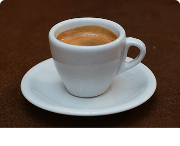
Café intenso e encorpado, preparado sob pressão para destacar aromas marcantes e uma crema aveludada.
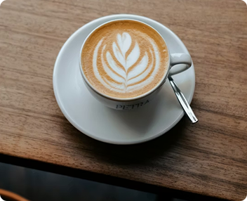
Combinação equilibrada de espresso, leite vaporizado e espuma cremosa, trazendo um sabor suave e aconchegante.
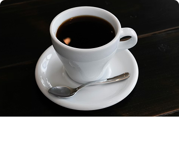
Preparado lentamente para realçar os sabores naturais do grão, proporcionando uma experiência mais aromática e delicada.
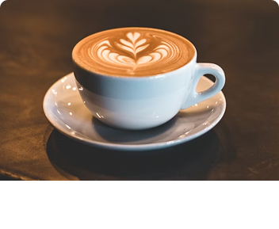
Bebida cremosa feita com espresso e maior quantidade de leite vaporizado, perfeita para momentos mais leves e confortáveis.
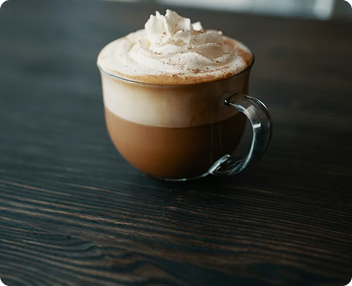
Mistura deliciosa de café, chocolate e leite vaporizado, finalizada com chantilly para um toque ainda mais especial.
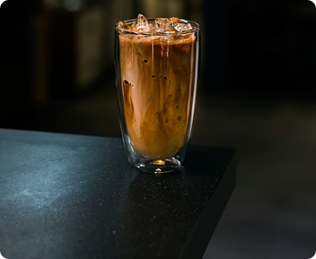
Uma opção refrescante preparada com café especial, gelo e notas suaves que equilibram sabor e frescor.
Uma seleção de doces artesanais preparados com cuidado para harmonizar com cada café, trazendo sabores acolhedores e momentos ainda mais especiais.
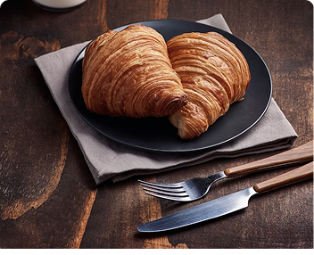
Massa leve e amanteigada recheada com chocolate cremoso.
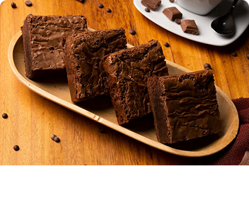
Brownie macio e intenso, servido com pedaços de chocolate meio amargo.
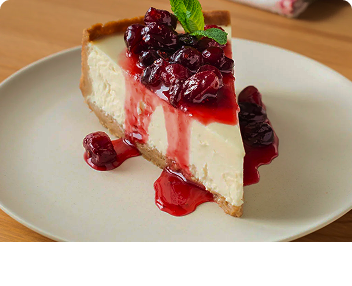
Sobremesa cremosa com cobertura suave de frutas vermelhas.
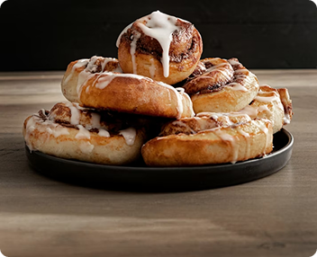
Doce tradicional com massa macia, canela e cobertura delicada.
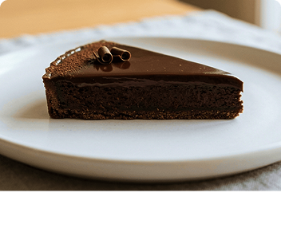
Torta cremosa com sabor marcante de café e toque de chocolate.
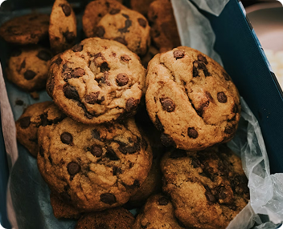
Cookies crocantes por fora e macios por dentro, preparados com gotas de chocolate.